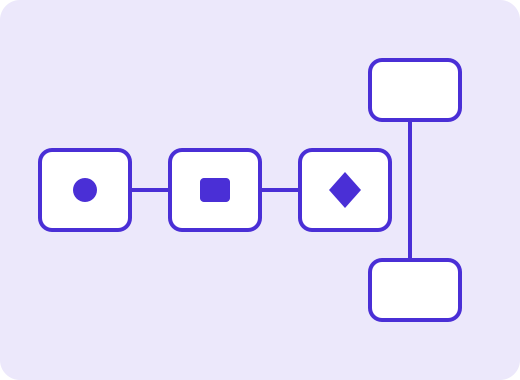

The Cairn delivery platform
Ship faster. Stay in control.
Cairn brings source control, build pipelines, a package registry, security scanning and deployments into one workspace, with approvals and audit trails built in.

One control plane
Each stage of delivery has a named capability, and they share one set of permissions and one activity history.
Cellar
A registry for packages and container images, with retention rules.
Sentinel
Scanning for code, dependencies and secrets, reported in review.
Launchpad
Deployments with environments, approvals and one-step rollback.
Cairn Assist
Assisted agents propose changes; people approve them.
Built to meet your industry's demands
Financial services
Evidence for change approvals collected automatically.
Aerospace and manufacturing
Traceable builds for regulated products.
Latest from the Northcairn blog
Shorter feedback loops without skipping checks
How teams trim build time while keeping every required gate in place.
A practical guide to secrets hygiene
Rotation, scoping and detection habits that hold up under pressure.
Introducing Cairn Assist previews
Assisted agents that propose changes for humans to approve.
Teams that deliver with Cairn
Invented organisations used for this design study:
- Brannock Aerospace
- Larkspur Credit Co-op
- Tidewater Transit Authority
- Quillon Retail Group
- Ferngate Health Network
Own what's next
Start with the free Starter plan or talk to a person about Summit.